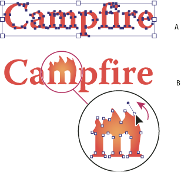

Convert type to outlines
You can turn type into a set of compound paths, or outlines, that you can edit and manipulate as you would any other graphic object. Type as outlines are useful for changing the look of large display type, but they are rarely useful for body text or other type at small sizes.
Font outline information comes from the actual font files installed on your system. When you create outlines from type, characters are converted in their current positions; they retain all graphics formatting such as their stroke and fill.

- A.
- Original type object
- B.
- Type converted to outlines, ungrouped, and modified
When you convert type to outlines, the type loses its hints—instructions built into fonts to adjust their shape so that your system displays or prints them optimally at a wide range of sizes. If you plan to scale the type, adjust its point size before converting.
You must convert all the type in a selection; you cannot convert a single letter within a string of type. To convert a single letter into an outline, create a separate type object containing only that letter.
- Select the type object.
- Choose Type > Create Outlines.